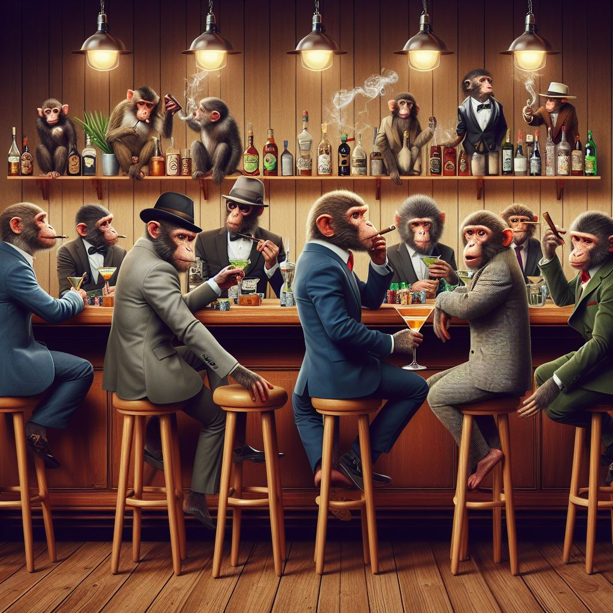

A Story Of Us
von Orfeo für Elsa <3

19. Mai
Wir trafen uns um 14 Uhr am Bellevue wir waren spazieren an der Spree und haben gezeichnet und schach gespielt.
Danach sind wir zum Zoo gefahren und haben Halloumi im Brot sowie Softeis gegessen. Die "Monkeybar" haben wir
entschlossen zu verschieben, weil die Schlange lang war und es eh schon spät wurde. Danach sind wir zum Treptower
Park gefahren und saßen eine Weile auf der Bank, dein Kopf angelehnt an meiner Schulter.

24. Mai
Ich ging zu dir in die Klasse und war als Gast für den ganzen Tag mit dabei. Danach sind wir zu dir gefahren und
haben in deinem Garten Tischtennis gespielt. Im Anschluss dazu haben wir zwei Folgen Queens Gambit geschaut und
dabei gekuschelt. Wir fingen an zu Zeichnen und kurz darauf gab es Abendessen mit deinen Eltern, die ich direkt
sehr lieb und nett fand. Nach dem Abendessen haben wir weiter gezeichnet und noch gekuschelt bis ich dann irgendwann
gehen musste. Außerdem habe ich mich getraut dich endlich auf ein "offizielles" Date einzuladen.

30. Mai
Wir waren bei Greta eingeladen und haben einen Spieleabend gemacht. Als es spät wurde und wir nur noch wenige waren
haben wir uns alle aufs Sofa gesetzt und eine Serie geschaut. Du hattest dabei deinen Kopf auf meiner Schulter, was
mich total gefreut hat. Danach gingen wir raus und ich brachte dich noch nach Hause.

31. Mai
Unser erstes date: wir trafen uns um 16 Uhr am Zoo und liefen erstmal ein bisschen den Ku‘ Damm entlang bis zu
einem Café, dort hast du mir zwei Sticker geschenkt, die du extra für mich gemacht hast.
1. Juni
Ich wollte dich sehen, also fuhr ich spät abends zum treptower park und traf dich mit Lissi. Wir spazierten eine
weile im park und legten uns anschließend ins Gras. Dort lagen wir eine Weile; du in meinem Arm. Wir haben viel
gelacht und du hast mich abgelenkt von meinen Sorgen. Da habe ich gemerkt wie gut du mir eigentlich tust.
9. Juni
wir trafen uns am S-bahnhof Treptower Park und liefen gemeinsam ein bisschen umher, dann gab ich dir eine kurze
Schachlektion. Anschließend gingen wir zu dir nach Hause: Wir kochten und unterhielten uns über Musik. Danach
gingen wir hoch auf deinen Balkon und legten uns in deine Hängematte. Wir kuschelten und redeten eine lange Weile
in der Hängematte; irgendwann schauten wir uns gegenseitig an und teilten dann unseren ersten gemeinsamen Kuss.
Danach redeten wir darüber wie wir uns schon länger küssen wollten und lachten viel über uns und unsere Unsicherheit.
Am Ende schauten wir noch „your name“ in deinem Bett und kuschelten dabei. Das war ein sehr, sehr schöner Tag.
22. Juni
Nach regelmäßigem Treffen und ein paar Küssen trafen wir uns an diesem Abend am Gleisdreieck. Wir spazierten ein
bisschen hin und her und legten uns anschließend im Nieselregen auf die Wiese. Nach einiger Zeit sagest du, dass du
mir eine Frage stellen musst und fragtest mich, ob ich mit dir zusammen sein möchte. Natürlich sagte ich ja!
Daraufhin küssten wir uns und lagen noch eine Weile auf der Wiese. Es fing dann an zu strömen und wir begaben uns
auf den Rückweg. Ich brachte dich noch nach Hause und wir rannten unter deiner Jacke im Regen zu dir. Du hast mir
noch deine Regenjacke mitgegeben und so machte ich mich mit einem wohligen gefühl auf den Weg nach Hause.
23. Juni
Der Tag von Marius’ Beerdigung und meiner Abiturverleihung. Dieser Tag war mit Abstand der traurigste und schwerste
Tag meines Lebens und du warst an meiner Seite. Du standest bei der Beerdigung immer an meiner Seite, du warst so
behutsam, weil du mir meine Privatsphäre lassen wolltest, aber gleichzeitig warst du in meiner Nähe um mich zu trösten.
Ich habe auch deine verletzliche Seite gesehen, deine Tränen. Ich weiß, dass du mir diesen Tag so viel einfacher
gemacht hast. Dieser Tag hat mir gezeigt, dass es immer Tiefen im Leben geben wird. Momente, in denen du dir
denkst, dass es so gar nicht weiter gehen kann. Momente, in denen alles um dich herum Träge ist und du zu gar nichts
Lust hast. Der Tag hat mir auch gezeigt, dass es im Leben ein bestimmtes etwas geben wird, das dir zeigt, dass es doch
weiter gehen kann. Dass alles um dich herum doch einen Sinn hat und dich motiviert weiter zu machen. Du bist dieses
etwas. Und das hab ich an dem Tag sehr stark zu spüren bekommen.
26. Juni
Du bist nach deinem Praktikum zu mir nach Hause gekommen, zur Wohnung meines Vaters. Du hast den Rest meiner Familie
inklusive Gabriel und Lil’ V beim Abendessen kennengelernt. Sonst ist an dem Abend nicht viel passiert, außer dass
wir uns viel geküsst und gekuschelt haben und ich die Zeit sehr genossen hab mit dir.
27. Juni
Du bist nach deinem Praktikum zu Aron gefahren und hast mir gesagt, dass ich gerne vorbeikommen soll, also habe ich
die Möglichkeit direkt ergriffen und bin zu euch. Wir haben gegessen und geredet und zum Schluss eine Folge Food Wars
in Aron’s Bett geschaut, wobei Aron so halb eingeschlafen ist. Als es Zeit wurde zu gehen hast, du dich an mich
geklammert und gesagt ich solle noch nicht gehen. Das war sehr süß und eigentlich wollte ich auch gar nicht gehen,
aber am nächsten Tag würde ich wegfliegen. Letztendlich hast du mich noch vor die Tür gebracht, wo wir uns mit einer
großen Umarmung und einem Kuss verabschiedet haben. Da wusste ich schon, dass ich dich ganz doll vermissen würde und
es war auch das erste Mal in unserer Beziehung, dass wir uns über eine etwas längere Periode nicht sehen würden.
19. Juli
Der Tag an dem ich Zurück in Berlin ankam. Wir hatten viel FaceTime'd aber ich hab dich trotzdem sehr vermisst und
jetzt konnte ich dich endlich wieder sehen und du hast mich vom Flughafen abgeholt! Marc kam auch noch als Überraschung
mit abholen, was mich extrem überrumpelt aber gefreut hat. Wir sind dann zu 3. zu mir nach Hause gefahren bis Marc
dann zu seinem Praktikum musste. Wir beide haben dann noch gekuschelt bis es Zeit war zu meinen Großeltern zu fahren.
Nachdem du meine Großeltern kennengelernt hast, sind wir wieder zu mir gefahren, Ich hab einen kleinen Mittagsschlaf
gemacht während du gezeichnet hast. Wir haben danach alle gemeinsam Abend gegessen (mit Marc) und sind danach mit
Felix und Magnus zum Schachturnier gefahren was, sehr cool war. Spät abends haben wir dann noch einen Anime
angefangen und sind kuschelnd eingeschlafen und am morgen wieder kuschelnd aufgewacht. Das war mit Abstand der beste
Ankunftstag nach einer Reise, den ich je hatte!
21. Juli
Ich bin schon früher zu dir gefahren damit mir ein bisschen Zweisamkeit hatten. Erst bin ich zu deiner Oma, wo ich
euch beiden geholfen habe Pflaumenkuchen für deinen Geburtstag zu machen. Deine Oma und ich unterhielten uns und es
war sehr schön. Danach waren wir noch eine Weile bei dir und kuschelten ein bisschen bis die ersten Gäste kamen.
Am abend haben wir Snacks gegessen und what do you meme gespielt, danach haben wir Karaoke gesungen und kurz vor
Mitternacht haben wir einen countdown zu deinem Geburtstag gemacht. Anschließend hast du deine Geschenke von uns
geöffnet!
22. Juli
Dein Geburtstag! Nachdem du deine Geschenke geöffnet hast, haben wir noch ein bisschen gechillt und anschließend
Greta und Feli zum Bus gebracht und noch einen Spaziergang gemacht bis Marc dann auch nach Hause fuhr. Du, Millie
und Ich sind dann wieder zurück zu dir wo deine Eltern dann auch wieder zurückgekommen waren. Du hast ihnen deine
Geschenke gezeigt, wir tranken noch einen Tee und dann gingen wir schlafen. Millie ist früh morgens dann losgegangen,
weil sie verreist ist. Du und ich haben kuschelnd weiter geschlafen bis es schon früh Nachmittags war und uns
deine Mutter geweckt hat und mich rausgeholt hat während du im Zimmer wartetest. Ich bin dann mit deinen Eltern und
einer Kerze wieder zurück in dein Zimmer wo wir dann für dich gesungen haben und dir gratuliert haben (eure
Familientradition). Anschließend gab es dann Geburtstagsbrunch wo du noch Geschenke von deinen Eltern bekommen hast.
Am Nachmittag gab es Kaffee und Kuchen mit dem Großteil deiner Großfamilie mütterlicherseits. Ich sprach mit deinem
Opa und viel mit deiner Tante, die mich direkt zu mögen schienen. Außerdem spielten wir als Gruppe Tischtennis und
haben viel gelacht. Das war wirklich sehr schön und du wirktest sehr glücklich. Danach bin ich mit dir und Lissi
spazieren gegangen und haben uns danach dann in dein Bett gelegt und haben „Tick… Tick… BOOM“ geschaut. Zwischendurch
gab es Abendessen mit deinen Eltern. Spät kurz vor Mitternacht bin ich mit dir zum Hauptbahnhof gefahren, wo wir Marc
abgeholt haben und sind anschließend noch spazieren gegangen.
23. Juli
Nachdem wir die Nacht gekuschelt und geschlafen haben frühstückten wir wieder gemeinsam mit deinen Eltern und mit
deiner Oma, dann bin ich wieder nach Hause gefahren. Am späten Abend bist du dann nochmal zu mir gekommen. Mein Dad
hat dir noch ein kleines Geburtstagsgeschenk gegeben worüber du dich sehr gefreut hast. Dann hast du mir eine
intensive Zeichenlektion mit einfärben gegeben und dann haben wir noch einen Filmabend mit Jujutsu Kaisen gemacht.
Wir haben noch bis spät Nachts gekuschelt und letztendlich hielten wir uns in den Armen und haben uns gesagt,
dass wir uns lieben. Ich war überglücklich.
24. Juli
Nachdem wir ausgeschlafen hatten, haben wir gemeinsam gefrühstückt und uns dann fertig gemacht. Ich hab dich dann
bis zum treptower park gebracht damit du noch genug Zeit hattest, um die restlichen sachen für deine Reise nach Italien
zu packen, wir haben uns intensiv umarmt, geküsst und du bist davon. Ich war sehr glücklich über die schöne Zeit am
Wochenende mit dir, das war zu dem Zeitpunkt mit Abstand meine glücklichste Zeit seit sehr langer Zeit. Am Abend
haben wir selbstverständlich nochmal telefoniert. Ich hab dich natürlich direkt vermisst aber wir haben ganz viel
geschrieben und du hast mich auf dem Laufenden gehalten.
11. August
Marc und ich sind an dem Tag aus Basel gekommen. Aron und du haben uns vom Bahnhof abgeholt. Wir sind zu dir
gefahren und haben Chili sin Carne in Wraps gegessen. Marc und Aron sind danach wieder nach Hause gefahren aber
ich hab bei dir übernachtet und somit haben wir noch gekuschelt und Jujutsu Kaisen geguckt. Am nächsten Morgen haben
wir mit Aron (und Marc, der aber viel zu spät kam) gebrunched. Danach bin ich auch nach Hause gefahren damit
ich meine Sachen von der Reise waschen konnte.